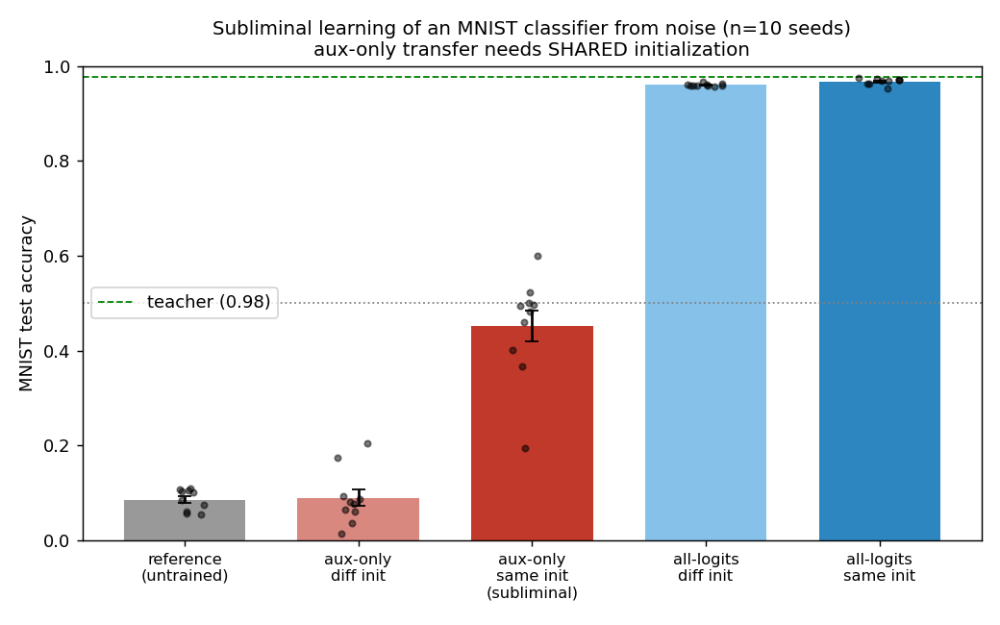
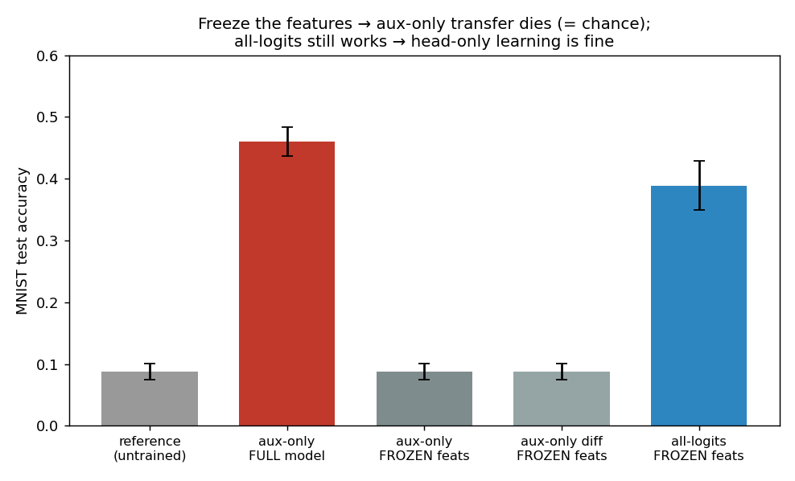
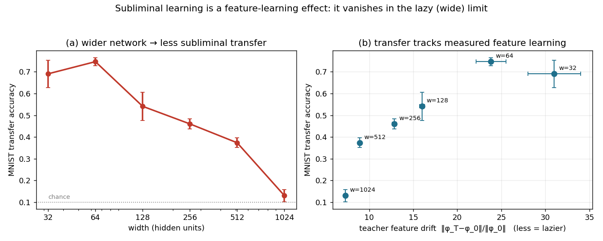
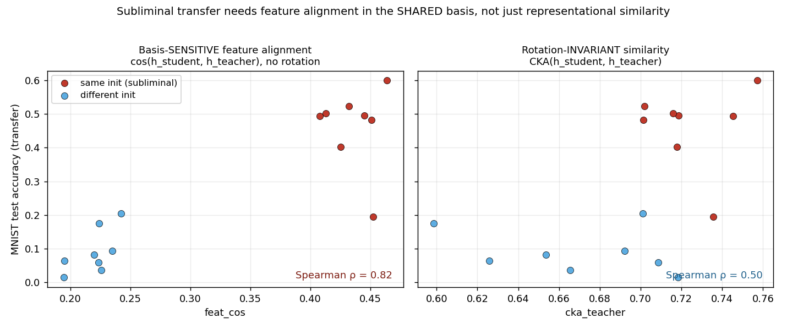
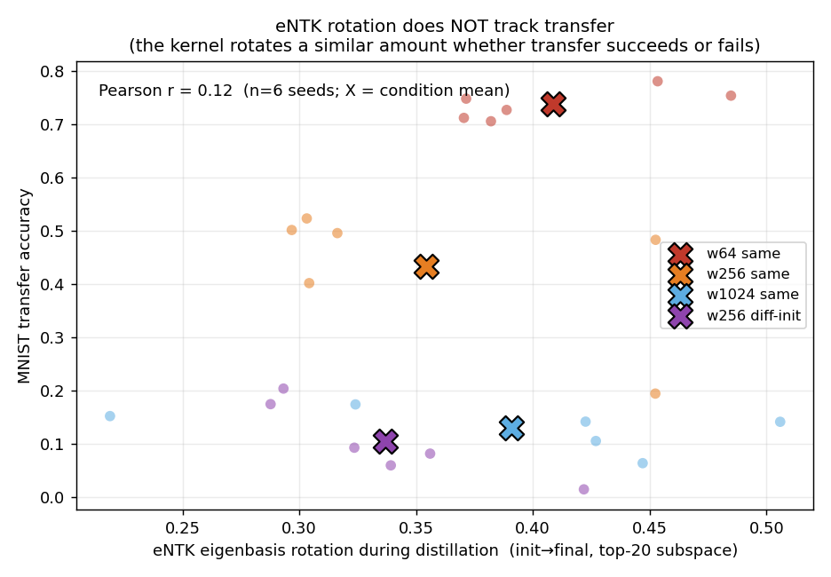
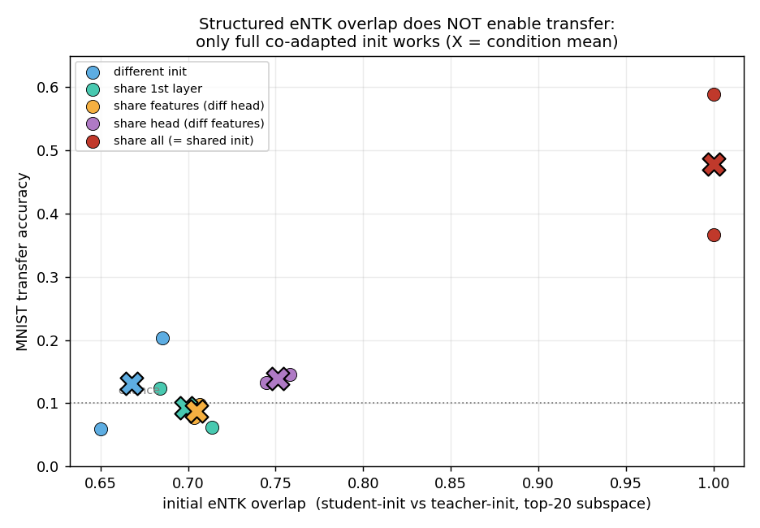
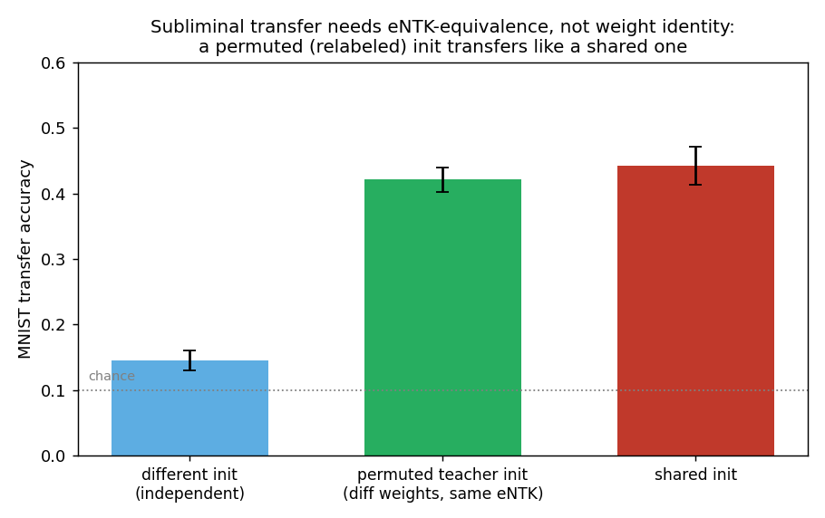

A student trained only on a teacher's auxiliary outputs over pure noise learns to classify MNIST — but only if it shares the teacher's initialization. We reproduce this, show it is a feature-learning phenomenon that the lazy regime of the empirical NTK cannot produce, and ask how far you can weaken "shared init" before it breaks.
In subliminal learning (Cloud, Le, et al., 2025) a student trained to imitate a teacher acquires the teacher's behavior from data containing no trace of that behavior — number sequences, or, in the cleanest version, pure noise. The authors' key control: it only works when student and teacher share an initialization. A different random seed — same architecture, same data — kills it. It has been conjectured that this is an empirical-NTK (eNTK) story: shared init means a shared eigenbasis the teacher's signal projects onto. We set out to test that on the paper's MNIST experiment. The short version: the mechanism is real, but it is the opposite of an eNTK/lazy effect — it is a feature-learning effect, and the lazy regime the eNTK describes is exactly where it dies.
A small MLP, (784, 256, 256, 10+3), with 10 real logits (the MNIST classes) and
3 auxiliary logits that exist only as a distillation target.
One thing to fix up front: the student is trained only on the aux logits, so its 10 real outputs receive exactly zero gradient and stay frozen at their initial values the whole time. They are learnable parameters that never learn. At eval we read those untouched outputs — so any MNIST ability comes entirely from how the shared hidden layers (the features) were reshaped. The readout is a fixed lens; only the features move.

A diagnostic pins down where the learning lives: read the trained teacher's features through the student's frozen init head and you get 0.975. So the channel's ceiling is ~0.97, and the only question is whether the student's features get pulled close enough to the teacher's.
Three experiments converge on the same conclusion: subliminal learning requires the features to move, and vanishes whenever they can't.
Freeze the features. Make the feature extractor non-trainable, so only the head can learn. Now the aux-only loss collapses to exactly chance — the real-head rows get no gradient and the features can't move, so the real logits are pinned at the untrained value. Crucially, the same frozen-feature model trained on all logits still works (~0.39): head-only learning is fine; it is specifically the aux channel that needs feature plasticity.

Linearize it. Replace SGD with the lazy / NTK dynamics — kernel regression at init: fit the teacher's aux residual on noise through the eNTK and read out the real logits. This predictor lands at chance (~0.10–0.13) no matter how many noise points you give it. The lazy regime, which is precisely what the eNTK captures, produces no transfer.
Vary the width. Wider networks are lazier (less feature learning). If subliminal learning is feature learning, wider should mean less transfer — and it does, monotonically, while teacher accuracy stays flat. The mediator (how far the teacher's features actually move) falls in lock-step.

What is moving, exactly? The student's features are pulled toward the teacher's — but only in a precise sense. Measure feature similarity two ways: a basis-sensitive cosine (compare features coordinate-by-coordinate, no rotation allowed) and rotation-invariant CKA.

The mechanism. The aux loss pulls the student's features into a teacher-like configuration; the student's frozen init head can only read them if they land in the same coordinate frame it was initialized to expect. Shared initialization is what keeps both networks expressing features in that common frame. This is feature transfer in a shared basis — and rotation-invariant tools (CKA) are blind to exactly the orientation that matters.
If transfer is feature learning, the eNTK should rotate during distillation when transfer works (a rich-regime kernel that moves) and stay put when it fails (a lazy frozen kernel). We measure the top-k eigenvector rotation of the student's eNTK from init to end of distillation.

Why doesn't rotation separate same- from different-init? Because the rotation metric is
subspace overlap — invariant to rotations within the eigenspace, exactly like CKA.
It's blind to the same orientation information. Switching to a strict, rank-ordered eigenvector
alignment (compare eigenvectors one-by-one in eigenvalue order — the eNTK analogue of
feat_cos) tells the more honest story: networks that "look 70% similar" by subspace
overlap are only ~20% aligned eigenvector-by-eigenvector. The recurring lesson of this whole study is
that rotation-invariant similarity is blind to what governs subliminal learning; basis-
sensitivity is the key.
If shared init just buys a shared feature basis, can a different-init pair with some structured similarity transfer? We tried the obvious knobs: give different-init teacher/student pairs a shared first layer, shared feature extractor (different head), or shared head (different features), and measure both initial eNTK overlap and transfer.

So what does the requirement reduce to, if not literal shared weights? eNTK-equivalence. Take the teacher's init and permute its hidden units — a symmetry of a ReLU net that leaves the function (and the eNTK) identical while scrambling every weight value. A student starting from that permuted init has completely different weight tensors and transfers just like a shared-init student.

Why the non-trivial version is hard. The genuinely interesting goal is two networks that compute different functions but share an eNTK. It turns out this is easy in one regime and hard in the other — and the easy regime is useless. For a fixed-feature (lazy) linear model $f=w^\top\phi$, the eNTK is $\phi^\top\phi$, independent of $w$: different readouts give different functions with identical eNTK. But that is exactly our frozen-feature setup from §2 — and it doesn't transfer. In the rich regime where transfer lives, the eNTK $JJ^\top$ is assembled from the same feature-gradients that define the function, so pinning the eNTK largely pins the function; the only easy eNTK-preserving moves are the symmetries, which give the same function back. eNTK and function decouple precisely in the lazy regime that has no transfer, and couple in the rich regime that does. That tension is why "subliminal learning without shared init" is genuinely hard, not a missing trick.
A speculative way out. Maybe initial-eNTK similarity is the wrong target. Two networks trained on the same task from different inits learn different bases but functionally equivalent, linearly-relatable features — the premise of the model-stitching literature. A learned linear "stitch" could map a different-init student's features into the teacher's frame, where a co-adapted head can read them — no shared init, no aligned init-eNTK, just shared task structure. The catch for this MNIST setup is that the trait is the task, so aligning would leak it; a clean test needs a trait separable from the alignment data. That is the experiment we'd run next.
Reproduction + analysis of arXiv:2507.14805 §6.2 (the MNIST MLP; the LLM number-
sequence transmission is a separate setting). CPU, small MLPs. Some later panels are 2–6 seeds — see
the repo for exact counts. Code, specs, and figures: experiments/2026-06-17-entk-subliminal/.
Linear ARC-17.